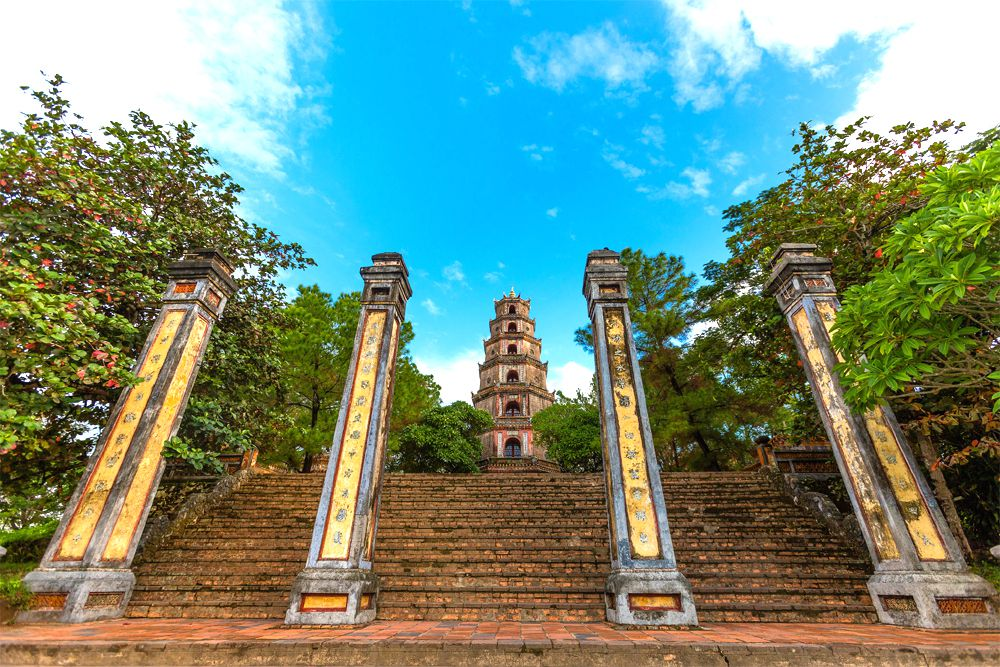
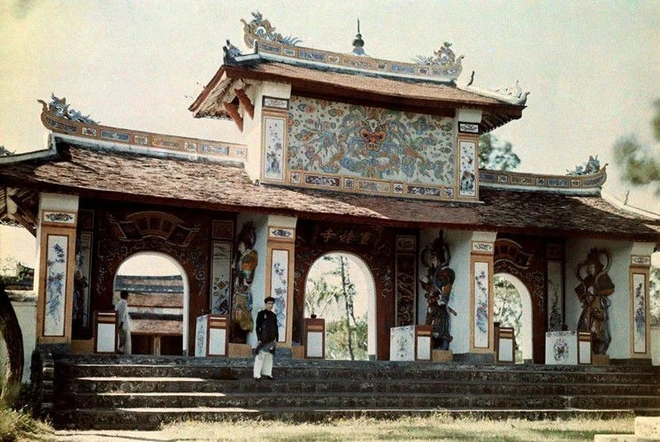
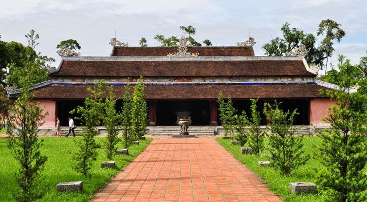
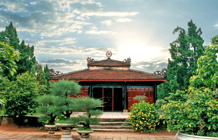
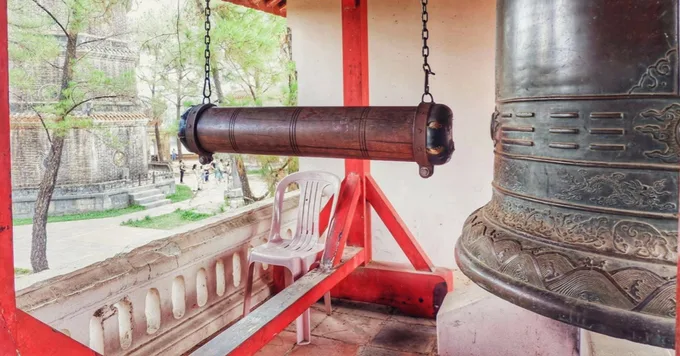
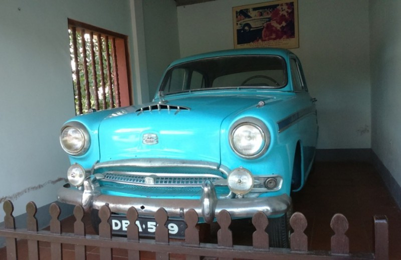

Chùa Thiên Mụ, Điểm Đến Tâm Linh Nên Thơ Xứ Huế
- 1. Chùa Thiên Mụ, điểm đến tâm linh nên thơ xứ Huế
- 2. Địa Chỉ
- 3. Phương tiện để bạn di chuyển đến thắng cảnh chùa Thiên Mụ
- 4. Giờ Mở Cửa Chùa Thiên Mụ
- 5. Lịch Sử Chùa Thiên Mụ
- 6. Sự Tích Dân Gian Về Chùa Thiên Mụ
- 7. Chùa Thiên Mụ Có Gì Hay?
- 8. Lễ Hội Chùa Thiên Mụ
- 9. Kinh Nghiệm Du Lịch Chùa Thiên Mụ
1. Chùa Thiên Mụ, điểm đến tâm linh nên thơ xứ Huế
Thành phố Huế - cố đô xinh đẹp và hiền hòa này là nơi quy tụ nhiều di tích, chùa chiền nổi tiếng của Việt Nam. Ngôi chùa cổ nhất ngày càng thu hút nhiều du khách đến tham quan là chùa Thiên Mụ. Chùa Thiên Mụ tọa lạc giữa vùng quê hữu tình và là nguồn cảm hứng cho nhiều tác phẩm thơ ca nhạc họa. Vẻ đẹp của ngôi chùa được tạo nên từ sự tổng hòa của giá trị văn hóa lịch sử, tâm linh và nghệ thuật. Chùa Thiên Mụ được xếp vào danh sách những điểm đến không thể bỏ qua ở Huế.
 Hình ảnh Chùa Thiện mụ (ảnh sưu tầm)
Hình ảnh Chùa Thiện mụ (ảnh sưu tầm)
Căn cứ bài thơ "Thuận Hóa thành tức sự" của nhà thơ Thái Thuận, thi sĩ Quách Tấn đã cho rằng dưới thời vua Lê Thánh Tông, sông Hương đã có cầu. Chiếc cầu đó, được làm bằng song mây bó chặt lại với nhau và nối liền nhau, nên có tên là cầu Mây. Vì cầu có hình cái mống úp lên sông, nên còn có tên là cầu Mống. Trải bao năm tháng, không biết khi nào, cầu Mống được làm lại bằng gỗ, mặt cầu lát bằng ván gỗ lim.
2. Địa Chỉ
Địa chỉ: Chùa tọa lạc trên con đường Nguyễn Phúc Nguyên, đỉnh đồi Hà Khê, thuộc phường Hương Long, bờ Bắc sông Hương, cách trung tâm thành phố Huế khoảng hơn 5km. Nó chính thức được thành lập vào triều đại của chúa Nguyễn Hoàng - vị chúa Nguyễn đầu tiên của nước Nam.
3. Phương tiện để bạn di chuyển đến thắng cảnh chùa Thiên Mụ
- Đi thuyền: Đi thuyền rồng dọc theo sông Hương khoảng 30 phút để đến chùa Thiên Mụ, tận hưởng làn gió thổi trên bờ sông mát rượi cùng phong cảnh tuyệt đẹp.
- Đi xe ô tô kèm tài xế riêng, : Đi dọc đường Kim Long và trước khi rẽ vào đường Nguyễn Phúc Chu. Mất khoảng 10 phút với 2km từ trung tâm thành phố.
- Đi xe đạp: Bạn có thể thuê xe đạp để vi vu đến chùa Thiên Mụ vì con đường rất đẹp và khá ngắn. Cũng có thể kết hợp chuyến tham quan chùa Thiên Mụ với Văn Miếu Huế và chùa Huyền Không chỉ cách đó vài km. Tuy nhiên bạn nên đạp xe vào sáng sớm để tránh cái nắng gay gắt vào buổi trưa và cần chú ý lưu lượng xe cộ đông đúc trên các con đường.
4. Giờ Mở Cửa Chùa Thiên Mụ
Chùa Thiên Mụ mở cửa cả ngày nên bạn có thể thoải mái tham quan. Nếu muốn chụp ảnh đẹp và tận hưởng không gian yên tĩnh của chùa thì 06h00 - 08h00 là khung giờ đẹp, ít các đoàn khách đông đúc. Còn nếu muốn ngắm nhìn hoàng hôn lãng mạn trên bờ sông Hương êm đềm thì hãy có mặt vào khoảng từ 17h00 - 18h00 chiều nhé!
5. Lịch Sử Chùa Thiên Mụ
Thiên Mụ là ngôi chùa được xây dựng sớm nhất tại Thành phố Huế. Tương truyền khi đến làng Thượng Hòa, tỉnh Quảng Nam, chúa Nguyễn Hoàng đã đích thân vào xem xét địa thế để dựng cơ đồ cho dòng họ Nguyễn. Trên một chuyến cưỡi ngựa dọc sông Hương lên đến đầu nguồn, Nguyễn Hoàng bắt gặp một ngọn đồi nhỏ bên sông Hương tên là Hà Khê. Nhận thấy thế đất giống như rồng quay đầu lại, năm 1601, Chúa quyết định xây dựng một ngôi đền trên đồi, hướng ra sông Hương và đặt tên là Thiên Mụ. Năm 1665, chúa Nguyễn Phúc Tần xin trùng tu chùa, quy mô kiến trúc nhỏ.
Chùa Thiên Mụ được xây dựng vào năm Tân Sửu 1601, thời chúa Nguyễn Hoàng. Dưới thời Quốc Tổ Nguyễn Phúc Chu (1691 - 1725), theo đà phát triển hưng thịnh của Phật giáo ở miền Nam Việt Nam. Ông đã tự tay viết bia ký và khắc trên một tấm bia lớn để ghi nhớ việc xây dựng các công trình kiến trúc ở đây, người dân đến Trung Quốc mua hơn 1.000 cuốn kinh Phật để trong lầu, và ca ngợi triết lý của đạo Phật.
6. Sự Tích Dân Gian Về Chùa Thiên Mụ
Tên chùa gắn liền với truyền thuyết của người dân địa phương. Chuyện kể rằng trên đỉnh đồi Hà Khê thường xuất hiện một cô gái với trang phục có hai màu trắng và đỏ. Cô gái nói với người dân rằng có một anh hùng hảo hán đến vùng đất này, sẽ dựng đền thờ ngay trên núi để hội tụ phong thủy mạnh mẽ của thiên nhiên, thu hút dũng sĩ, hiền tài, tích cực giúp dân tộc phát triển.
Năm 1601, khi chúa Nguyễn Hoàng đến vùng này và được nghe truyền thuyết. Ông đã cho dân xây dựng chùa như câu nói của cô gái đó. Ông tin rằng cô gái đó là người trời nên gọi chùa là Thiên Mụ hay Bà Chúa Trời. Sau đó, một số người còn gọi là chùa Linh Mụ (chùa Thánh Bà) nhưng Thiên Mụ vẫn là tên nổi tiếng của chùa này.
7. Chùa Thiên Mụ Có Gì Hay?
I. Cổng Tam Quan Chùa Thiên Mụ
Cổng Tam Quan là điểm đầu tiên bạn đi qua khi bước chân vào chùa Thiên Mụ. Đây là cổng chính dẫn thẳng vào chùa. Cổng có tổng cộng 2 tầng, 8 mái và 3 mối đi có cửa bằng gỗ son đỏ kiên cố. Xung quanh cổng là các bức tượng thần Hộ Pháp trấn giữ sự bình yên ngôi chùa.
II. Tháp Phước Duyên Chùa Thiên Mụ
Tháp Phước Duyên ngày nay đã trở thành biểu tượng nổi tiếng gắn liền với chùa Thiên Mụ. Được xây dựng trước chùa vào năm 1984, tháp này có chiều cao 21 mét và 7 tầng. Mỗi tầng đều có tượng Phật. Bên trong có một cầu thang xoắn ốc dẫn lên tầng cao nhất, nơi có bức tượng Phật bằng vàng trước đây.
Phía trước tháp là Đền Hương Nguyên. Trận bão năm 1904 đã phá hủy nặng nề chùa và nhiều công trình kiến trúc, trong đó chùa Hương Nguyên bị sập hoàn toàn (nay vẫn còn dấu tích). Đến năm 1907, vua Thành Thái đã cho xây dựng lại nhưng ngôi đền nhưng không còn giữ được hình dáng to lớn như ban đầu. Hai bên tháp có hai hình tứ giác, đặt hai tấm bia Thiệu Trị. Phía sâu bên trong có hai ngôi nhà hình lục giác, nhà bia và gác chuông thờ chúa Nguyễn Phúc Chu.
III. Đền Đại Hùng
Đây là ngôi chính điện trong chùa Thiên Mụ và là một công trình kiến trúc nguy nga. Trong lần tu bổ năm 1957, toàn bộ cột, kèo, rường, bệ… đều được xây lại bằng bê tông và phủ một lớp sơn giả gỗ. Ngoài tượng Phật bằng đồng, ở đây còn có một pho tượng lớn bằng đồng được khắc hình mặt nguyệt với dòng chữ cho thấy pho tượng này do Trần Đình Ân hiến cho chùa. Bên trong chùa có tượng Phật Di Lặc. Người ta nói rằng Phật có tai để nghe nỗi khổ của thế gian, bụng bao dung độ lượng thế gian, miệng rộng để cười thế gian.
Cách xa nơi đặt tượng Di Lặc là ba vị Phật ở chính giữa điện. Hai bên là Bồ Tát và Phổ Hiền. Đi dọc theo con đường phía sau vườn có phòng trưng bày ảnh và chiếc xe của Hòa thượng Thích Quảng Đức, người đã tự thiêu năm 1963 để phản đối chế độ đàn áp Phật giáo. Tiếp đến là lăng mộ của sư Thích Đôn Hậu - Ông là phó chủ tịch Hội Phật giáo Yêu nước thời chống Mỹ và có công trong việc chấn hưng Phật giáo ở Huế cũng như ở Việt Nam.
IV. Đền Địa Tạng
Đền Địa Tạng nằm sau đền Đại Hùng và được ngăn cách bằng khoảng sân rộng trồng nhiều cây cảnh. Nó nằm trên nền của dấu vết của ngôi chùa Di Lặc cũ rất rộng. Con đường bên trái Đại Hùng đi vào bên trong chùa.
Ban đầu đền được xây dựng để thờ Quan Công (từ năm 1907), một điều khá phổ biến trong các ngôi chùa Việt Nam ngày xưa, do ảnh hưởng của Phật giáo Trung Hoa. Cho đến nay, các chùa lớn ở Huế vẫn còn thờ Quan Công. Người ta cho rằng Quan Công sau khi chết rất linh thiêng, biết âm dương, tương lai tốt xấu. Vì vậy, chùa là nơi thờ không chỉ Phật mà còn có bộ hình xăm thẻ.
V. Chuông Đại Hồng Chung
Năm 1710, chúa Nguyễn Phúc Chu yêu cầu đúc chuông “Đại Hồng Chung” để thờ quốc công. Chuông Đại Hồng Chung dù đã 300 năm tuổi nhưng vẫn giữ được vẻ đẹp uy nghiêm vốn có. Đại Hồng Chung cao 2,5m nằm trong khuôn viên chùa Thiên Mụ. Trên quả chuông có khắc Đại Hồng Chung nặng 3.285 cân và có khắc chữ của chúa Nguyễn Phúc Chu với ý nghĩa mong mưa thuận gió hòa, quốc thái dân an, nhân dân đều là Phật tử. Hoa văn trang trí trên Đại Hồng Chung rất tinh xảo với trình độ nghệ thuật cao. Các họa tiết rất linh hoạt đối xứng với nhau. Trên thân chuông có tám chữ cái được viết theo nhiều cách khác nhau. Ngoài ra, tương truyền rằng Đại Hồng Chung ở chùa Thiên Mụ là bảo vật lớn nhất ở Huế thời bấy giờ. Vì vậy, người dân Huế rất tự hào về quả chuông.

VI. Xe Cổ Austin Westminster
Trong chùa Thiên Mụ có một chiếc ô tô cổ được người dân gìn giữ cẩn thận. Quý Phật tử phương xa hay du khách thập phương hãy dành chút thời gian để chiêm ngưỡng chiếc xe nhuốm màu thời gian xưa, chiếc xe nhãn hiệu Austin Westminster cùng diễu hành và đưa tiễn Hòa Thượng Thích Quảng Đức, người đã tự thiêu ngày 11/6/1963 để chống lại chính quyền Diệm.
Năm 1963, bầu không khí chính trị của miền Nam thay đổi không còn lối thoát cho hòa bình dưới thời Chính phủ Ngô Đình Diệm. Tiếng súng nổ, lửa bốc lên khắp nơi để đàn áp cộng sản và giới Phật giáo. Trong thời gian đó Hòa thượng Thích Quảng Đức, trụ trì chùa Ấn Quang, không cam lòng trước cảnh Phật tử bị đàn áp trong vũng máu đã quyết định tự thiêu để phản đối hành động tàn bạo của Chính phủ Diệm - Nhu.
Gần nửa thế kỷ trôi qua, ô tô Austin Westminster vẫn giữ cho mình vẻ đẹp hiện đại, tiện nghi và sang trọng. Nhưng theo thời gian, nó đã trở nên cũ kỹ và hoen gỉ. Tuy nhiên, chiếc xe mang biển số DBA 599 sẽ còn sống mãi với sự kiện hào hùng tự thiêu của vị Tổ sư yêu nước Thích Quảng Đức.
8. Lễ Hội Chùa Thiên Mụ
Tên chùa gắn liền với truyền thuyết của người dân địa phương. Chuyện kể rằng trên đỉnh đồi Hà Khê thường xuất hiện một cô gái với trang phục có hai màu trắng và đỏ. Cô gái nói với người dân rằng có một anh hùng hảo hán đến vùng đất này, sẽ dựng đền thờ ngay trên núi để hội tụ phong thủy mạnh mẽ của thiên nhiên, thu hút dũng sĩ, hiền tài, tích cực giúp dân tộc phát triển.
Năm 1601, khi chúa Nguyễn Hoàng đến vùng này và được nghe truyền thuyết. Ông đã cho dân xây dựng chùa như câu nói của cô gái đó. Ông tin rằng cô gái đó là người trời nên gọi chùa là Thiên Mụ hay Bà Chúa Trời. Sau đó, một số người còn gọi là chùa Linh Mụ (chùa Thánh Bà) nhưng Thiên Mụ vẫn là tên nổi tiếng của chùa này.
9. Kinh Nghiệm Du Lịch Chùa Thiên Mụ
Tên chùa gắn liền với truyền thuyết của người dân địa phương. Chuyện kể rằng trên đỉnh đồi Hà Khê thường xuất hiện một cô gái với trang phục có hai màu trắng và đỏ. Cô gái nói với người dân rằng có một anh hùng hảo hán đến vùng đất này, sẽ dựng đền thờ ngay trên núi để hội tụ phong thủy mạnh mẽ của thiên nhiên, thu hút dũng sĩ, hiền tài, tích cực giúp dân tộc phát triển.
Năm 1601, khi chúa Nguyễn Hoàng đến vùng này và được nghe truyền thuyết. Ông đã cho dân xây dựng chùa như câu nói của cô gái đó. Ông tin rằng cô gái đó là người trời nên gọi chùa là Thiên Mụ hay Bà Chúa Trời. Sau đó, một số người còn gọi là chùa Linh Mụ (chùa Thánh Bà) nhưng Thiên Mụ vẫn là tên nổi tiếng của chùa này.